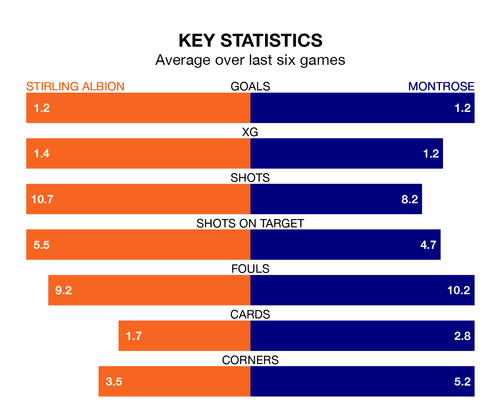

Struggling Stirling Albion face Montrose at the Forthbank Stadium on Tuesday looking to build on a win in their last league outing.
After securing all three points with a 1-0 victory over Montrose on January 13, the Binos sit eighth in League One.
They travel to play a Montrose side fourth in the standings, who lost in their last match, 1-0 against Stirling Albion.
With 16 goals in 19 games so far this season, Stirling are the league's lowest scorers with 0.8 goals per game. And they are conceding more than average, letting in 32 goals at a rate of 1.7 per game.
Montrose are also below average scorers, with 1.4 goals per game, compared to a league average of 1.5. They have conceded 1.6 goals per game.
In the last 10 years, Stirling and Montrose have played each other on 19 occasions. Stirling won eight of them, Montrose seven, and they drew four times.
On average, the Binos scored 1.6 goals and the Gable Endies 1.3 in those matches.
Their last meeting was on January 13, when Stirling won 1-0 away.
In Blair Currie, Albion can rely on one of the league's safest pair of hands. He has kept five clean sheets in his 19 appearances this season, and only two other 'keepers – Falkirk's Sam Long and Hamilton Academical's Ryan Fulton – have been able to prevent the opposition scoring on more occasions in League One.
In the Gable Endies's net, Cameron Gill has three clean sheets in 20 games.
The Binos are in mixed form in League One, with two wins and two draws from their last six games.
With a win and three draws over that period, the visitors' form is slightly worse – they have taken six points from 18, compared to the home team's eight.
Tuesday's match will be refereed by Steven Kirkland, who has taken charge of five League One games so far this season, issuing no red cards and booking 26 players. He has awarded four penalties.
The last Montrose game Kirkland refereed was the 2-1 win at home against Alloa Athletic on October 7. He is yet to oversee a match featuring Stirling this season.
Updated: 09:18 (UTC), 23/01/24